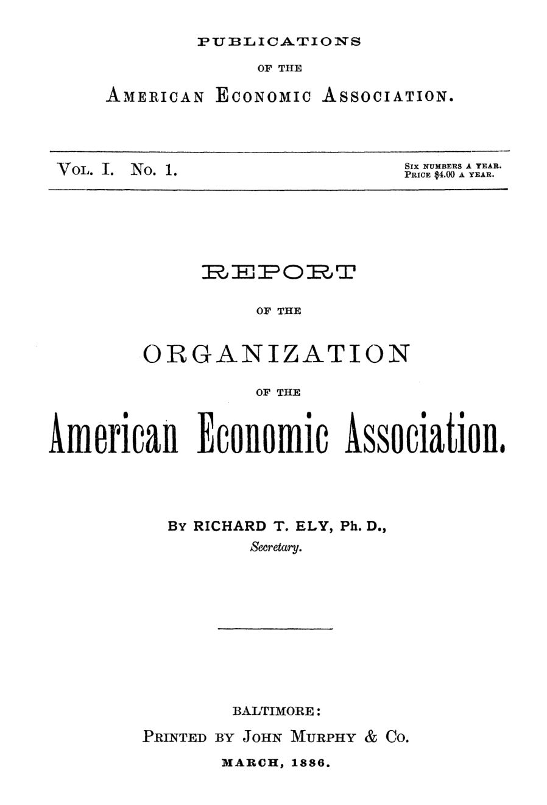

Saratoga, 1885: os economistas que recusaram um credo
Em setembro de 1885, um grupo de professores reuniu-se em Saratoga para fundar uma associação de economistas. Quase naufragou num manifesto contra o laissez-faire. Salvou-a uma nota de rodapé.


Às quatro da tarde de 8 de setembro de 1885, um grupo de professores, pastores e homens públicos entrou no Bethesda Parish Building, em Saratoga, no estado de Nova York. Vinham de uma reunião da American Historical Association, que ocupava a cidade de 8 a 11 de setembro. O assunto era outro: fundar uma sociedade de economistas. O relatório oficial, publicado em março de 1886, admite um detalhe pouco solene numa nota de rodapé. Ninguém fez a lista completa dos presentes, e o secretário confessa não lembrar de todos os nomes.
O secretário era Richard T. Ely, da Johns Hopkins University. Seu relatório abre o primeiro número das Publications of the American Economic Association, vendidas a 4 dólares por ano, em seis números. É um documento raro: registra não só o que foi decidido, mas o que foi discutido, quem objetou e por quê. Lido hoje, é a ata de uma briga intelectual que terminou num acordo engenhoso.
O que o prospecto de 1885 propunha?
A iniciativa começou na primavera de 1885. Um prospecto foi enviado à maioria dos interessados em economia política nas faculdades americanas. Trazia quatro objetivos: estimular a pesquisa econômica, publicar monografias, garantir perfeita liberdade de discussão e criar um escritório de informação para orientar os estudos dos membros. Até aí, nada que assustasse alguém.
O problema estava na segunda parte, a plataforma. Seus quatro artigos diziam que o Estado é um agente educativo e ético, cuja ajuda positiva é condição indispensável do progresso humano. Recusavam as conclusões definitivas da economia política da geração anterior. Afirmavam que o conflito entre trabalho e capital exigia o esforço conjunto da Igreja, do Estado e da ciência. E declaravam neutralidade partidária na disputa entre livre-comércio e protecionismo. A frase que deu o tom de tudo vinha no primeiro artigo:
“a doutrina do laissez-faire é insegura na política e infundada na moral” (“the doctrine of laissez-faire is unsafe in politics and unsound in morals”)
A recepção foi calorosa. Ely reproduz cartas de apoio de professores como Henry C. Adams, de Michigan, e J. B. Clark, do Smith College, e de pastores como Lyman Abbott e Washington Gladden. Andrew D. White, presidente de Cornell, escreveu que concordava inteiramente que a teoria do laissez-faire era inadequada aos Estados modernos. A imprensa ajudou. Em 23 de julho de 1885, o semanário religioso Christian Union saudou uma nova economia política, indutiva e cristã. Em 20 de agosto, o Philadelphia Times elogiou a ideia de começar do começo, sem aceitar nada como indiscutível só porque um grande economista o disse.
Por que Ely queria uma plataforma, e não apenas um clube?
Eleito secretário provisório, Ely expôs suas razões na primeira sessão. O relatório faz questão de avisar, em nota, que aquela fala era opinião pessoal e nunca foi aceita pela associação como expressão autorizada de seus objetivos. O cuidado tinha motivo: alguns presentes discordaram fortemente.
Ely foi prático em muitos pontos. Preferia monografias a uma revista, porque monografias não prometem o que não podem cumprir; uma revista fracassada seria um fiasco e expunha os fundadores ao ridículo. Defendeu que a associação educasse a opinião pública, já que em nenhuma outra ciência havia tanto charlatanismo. Para mostrar por que o Estado não podia ser mero espectador, deu dois exemplos: grupos que se apossavam ilegalmente dos cursos d'água nas pastagens do Oeste e as tarifas ferroviárias discriminatórias que enriqueciam os favorecidos e arruinavam concorrentes.
Sobre a plataforma, seu argumento era quase de marketing. Uma associação que não professa nada não desperta interesse. Aquela tinha sido recebida com entusiasmo justamente por não ser incolor. Além disso, as diferenças de método entre economistas seriam tão radicais que não dava para trabalharem juntos: como dois viajantes numa bifurcação, quem acredita em destinos diferentes precisa se separar. Ely fechou com uma frase de humildade calculada:
“sabemos melhor aquilo que não sabemos” (“we know better what we do not know”)
O que dividiu os fundadores em Saratoga?
Seguiu-se o que o relatório chama de debate animado, com quase todos os presentes tomando a palavra. Henry C. Adams apoiava a proposta, mas temia que a condenação formal do laissez-faire fosse lida como adesão à visão alemã do Estado como análise final das relações humanas. A filosofia inglesa, que via o Estado como mal necessário, estava errada; a alemã, também. Sua sugestão: a economia precisava, mais do que de tudo, de um retorno ao espírito de Adam Smith.
Alexander Johnston, de Princeton, foi na mesma linha. Aquilo não era uma rebelião contra Smith, Malthus, Ricardo e Mill, mas uma luta pela liberdade de desenvolver a obra deles. Não queria ver o laissez-faire condenado em bloco, e sim restrito à sua esfera legítima, a produção e a troca. Van Buren Denslow atacou outra frente: objetou à palavra Igreja, porque prejudicaria a associação e porque nos Estados Unidos não havia uma Igreja, apenas um conjunto de sociedades religiosas. Gladden respondeu que também não havia um só Estado, e ninguém deixava de usar a palavra.
A acusação de importar a Alemanha pairava sobre a sala. Muitos ali tinham estudado em universidades alemãs. Ely negou que fosse um movimento alemão e insistiu no caráter americano da iniciativa. White, curiosamente, celebrou o retorno daqueles jovens vindos da Alemanha como um marco da história americana. Edmund J. James propôs reconhecer o Estado como categoria permanente da vida econômica, não uma muleta temporária, mas sem dar pretexto à pecha de socialistas de cátedra.
Os mais cautelosos foram Edwin Seligman e E. Benjamin Andrews. Seligman achava exagerada a reação contra a livre concorrência: competição seria uma força neutra, que trouxera benefícios imensos e podia, em certas condições, produzir males. A ciência ainda não tinha certeza bastante para pedir mais intervenção. Andrews, que esperava ser o mais conservador da sala e descobriu que não era, chegou a propor que se omitisse a declaração de princípios.
Como se aprova um manifesto sem impor um credo?
Quem nomeou o problema foi J. B. Clark. Antes de discutir o texto, disse, era preciso saber para que ele serviria. Se fosse um credo obrigatório para cada membro, teria de ser tão prudente que perderia o sentido. Se servisse apenas para dar unidade de propósito ao trabalho coletivo, sem prender ninguém, a proposta de Ely poderia ficar, com pequenos ajustes. O ponto de discórdia, previu, seria a condenação forte do laissez-faire.
“teremos de torná-lo tão conservador que ficará quase sem sentido” (“we must make it so highly conservative as to be comparatively meaningless”)
A saída veio de Herbert B. Adams, também da Johns Hopkins: uma resolução que, com pequenas mudanças, virou a nota anexa à declaração de princípios. A plataforma foi enviada a uma comissão de cinco, formada pelo presidente da mesa, pelo secretário, por Gladden, Johnston e Clark. Outra comissão, com James, H. B. Adams e Andrews, cuidaria da organização. A sessão terminou às seis horas.
No dia seguinte, 9 de setembro, a comissão voltou com um texto mais simples e afirmativo. O Estado deixou de ser agente educativo e ético; tornou-se um agente cuja assistência positiva é uma das condições indispensáveis do progresso. A frase sobre o laissez-faire desapareceu. Entrou um reconhecimento expresso ao trabalho dos economistas anteriores. A Igreja ficou, mas cada força passou a atuar em sua própria esfera. A nota final dizia que a declaração indicava as ideias dos fundadores, mas não obrigava os membros individualmente. O relatório fixa ali, em 9 de setembro de 1885, o dia do nascimento da associação.
Com que dinheiro e com que estrutura a associação começou?
A constituição é curta e austera. Qualquer pessoa podia se tornar membro pagando 3 dólares, com anuidade de igual valor depois do primeiro ano. Havia um presidente, três vice-presidentes, um secretário, um tesoureiro e um conselho de tamanho indefinido, que elegia a diretoria. Para publicar, a comissão executiva podia sacar recursos do tesoureiro, desde que nenhuma dívida fosse contraída. Uma sociedade que pregava a ação positiva do Estado começava com orçamento equilibrado por estatuto.
O método ficou inscrito na própria máquina. O conselho se dividia em sete comissões permanentes, que preparavam relatórios para discussão; todo trabalho oferecido à sociedade passava antes pela comissão competente. A associação se dispunha a financiar pesquisas e a premiar as melhores monografias sobre temas escolhidos. Fatos antes de doutrina não era só um lema: era o fluxo de trabalho.
Quem estava na lista dos fundadores?
Francis A. Walker, do Massachusetts Institute of Technology, foi eleito presidente por unanimidade sem estar presente. Respondeu que aceitava com orgulho o cargo numa associação de homens que acreditavam haver ainda trabalho a fazer em economia. Henry C. Adams, Edmund J. James e John B. Clark ficaram com as três vice-presidências. Ely ficou com a secretaria; Seligman, de Columbia, a tesouraria.
O conselho de 24 nomes mistura professores, pastores e funcionários públicos. Carroll D. Wright, comissário do Bureau of Labor dos Estados Unidos, presidia a comissão de estatística. Woodrow Wilson, então professor em Bryn Mawr, tinha assento. Katharine Coman, do Wellesley College, esteve em Saratoga, entrou no conselho e na comissão do trabalho. Na lista de membros, o industrial Carnegie convive com editores de jornais de Springfield, onde já se formara uma filial regional, a Connecticut Valley Branch.
Na minha leitura
Na minha leitura, o momento decisivo de Saratoga não é a frase contra o laissez-faire, e sim a nota que a tornou dispensável. Os fundadores perceberam que uma comunidade científica que exige adesão a conclusões deixa de ser científica e vira partido. Preferiram amarrar os membros a um método, a investigação histórica e estatística, e deixar as conclusões em aberto. É um arranjo que toda instituição técnica precisa refazer de tempos em tempos.
O debate de fundo também continua vivo. Seligman pedia certeza antes de intervenção; James queria o Estado como categoria permanente, sem crescimento automático. Entre um e outro está o dilema de sempre da política econômica: o ônus da prova cabe a quem quer agir ou a quem quer deixar como está? A resposta de 1885, decidir caso a caso, com base nos fatos, ainda me parece a mais honesta.
Glossário
- Laissez-faire
- Doutrina segundo a qual o Estado não deve interferir na vida econômica, limitando-se a garantir contratos, punir crimes e manter a ordem.
- Escola histórica
- Corrente, forte nas universidades alemãs, que estuda a economia pela história e pela estatística, desconfiando de leis universais deduzidas em abstrato.
- Socialistas de cátedra
- Apelido dado na Alemanha a professores que defendiam reformas sociais pelo Estado; os fundadores temiam o rótulo.
- Monografia
- Estudo aprofundado sobre um único tema, publicado de forma avulsa; foi o formato escolhido em vez de uma revista periódica.
- Plataforma
- Declaração pública de princípios de um grupo; em Saratoga, a dúvida era se ela obrigaria cada membro.
Fontes
- Report of the Organization of the American Economic Association (pp. 5–32). JSTOR · Internet Archive (PDF)
- Constitution, By-Laws and Resolutions of the American Economic Association (pp. 35–46). JSTOR · Internet Archive (PDF)
- Sumário da edição no JSTOR: Publications of the American Economic Association, vol. 1, nº 1.
Documento em domínio público (EUA, publicado antes de 1931), via JSTOR Early Journal Content e Internet Archive. Resumo e comentário do autor deste site, sem afiliação com a American Economic Association. Encontrou um erro? Escreva: a correção é publicada no próprio texto, com data.